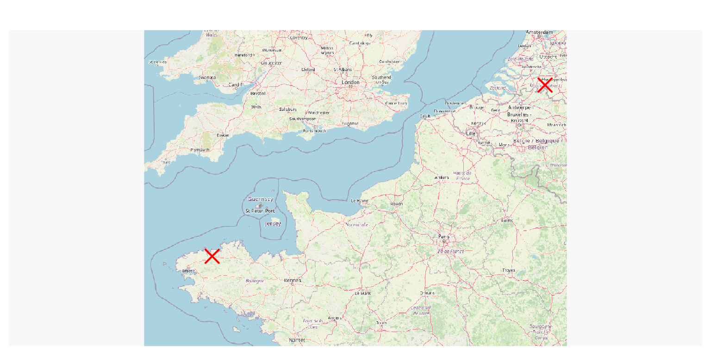

mapsf
sf
tidygeocoder
Plusieurs packages permettent de géocoder des adresses. Le package tidygeocoder (Cambon et al., 2021) permet d’utiliser un grand nombre de services de géocodage en ligne.
library(tidygeocoder) address_df <- data.frame( address = c("10 Emma Goldmanweg, 5032MN Tilburg, Netherlands", "19 rue Michel Bakounine, 29600 Morlaix, France") ) places <- geocode(.tbl = address_df, address = "address")
#> Passing 2 addresses to the Nominatim single address geocoder
#> Query completed in: 2 seconds
places
#> # A tibble: 2 × 3 #> address lat long #> <chr> <dbl> <dbl> #> 1 10 Emma Goldmanweg, 5032MN Tilburg, Netherlands 51.5 5.04 #> 2 19 rue Michel Bakounine, 29600 Morlaix, France 48.6 -3.82
La fonction st_as_sf() permet de transformer un data.frame contenant des coordonnées géographiques en objet sf.
st_as_sf()
data.frame
library(sf) place_sf <- st_as_sf(places, coords = c("long", "lat"), crs = 4326) place_sf
#> Simple feature collection with 2 features and 1 field #> Geometry type: POINT #> Dimension: XY #> Bounding box: xmin: -3.816434 ymin: 48.59041 xmax: 5.038699 ymax: 51.53649 #> Geodetic CRS: WGS 84 #> # A tibble: 2 × 2 #> address geometry #> * <chr> <POINT [°]> #> 1 10 Emma Goldmanweg, 5032MN Tilburg, Netherlands (5.038699 51.53649) #> 2 19 rue Michel Bakounine, 29600 Morlaix, France (-3.816435 48.59041)
library(sf) mon_point <- st_as_sf(data.frame(x = 0.5, y = 45.5), coords = c("x", "y"), crs = 4326) mon_point
#> Simple feature collection with 1 feature and 0 fields #> Geometry type: POINT #> Dimension: XY #> Bounding box: xmin: 0.5 ymin: 45.5 xmax: 0.5 ymax: 45.5 #> Geodetic CRS: WGS 84 #> geometry #> 1 POINT (0.5 45.5)
Nous pouvons afficher cet objet sf sur un fond de carte OpenStreetMap avec le package maptiles (Giraud, 2023).
maptiles
library(maptiles) osm <- get_tiles(x = place_sf, zoom = 7) mf_raster(osm) mf_map(place_sf, pch = 4, cex = 2, lwd = 2, col = "red", add = TRUE)
